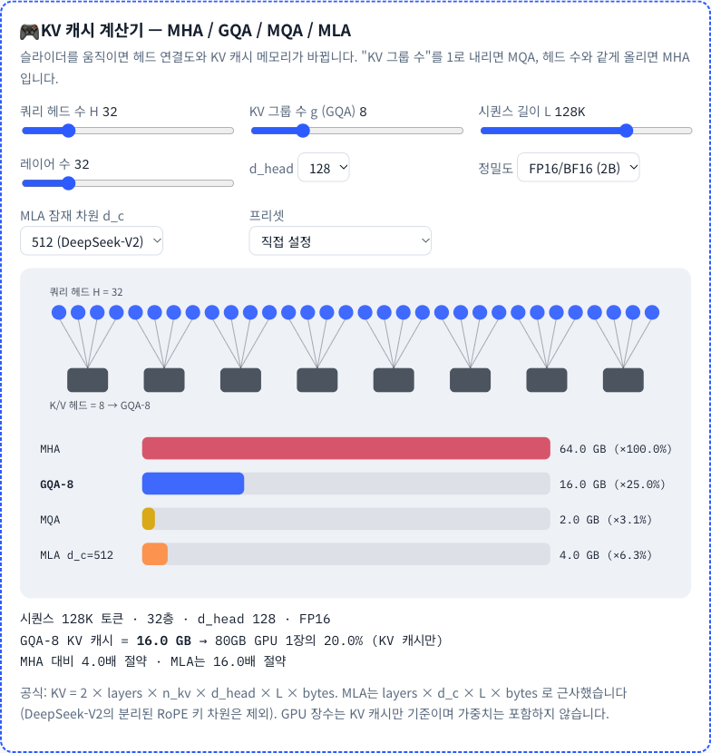
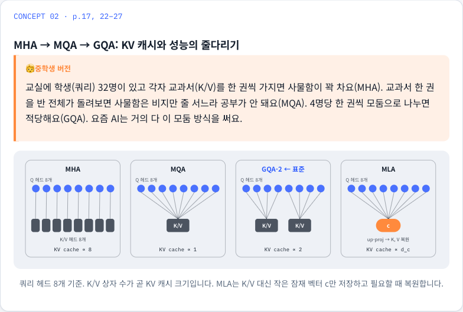
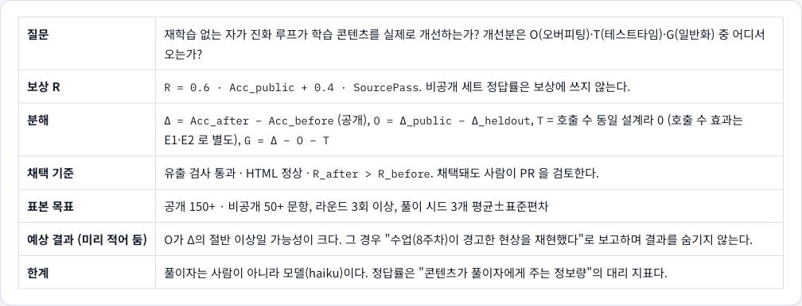

연세대학교 공학대학원 인공지능학과 · 최신딥러닝이론및응용
재학습 없는 LLM 자가 진화 루프의 학습 콘텐츠 개선 효과 검증
오버피팅 · 테스트타임 · 일반화 분해
14조 · EvoLecture · 2026-11-15 프로젝트 제안
https://wukong-daima.github.io/team14-project/
질문
모델 가중치를 바꾸지 않는 자가 진화 하네스가 학습 콘텐츠를 실제로 개선하는가?
개선분을 수업에서 배운 대로 쪼개면 무엇이 남는가?
- 부질문 1 · 보상에서 출처 검증 항을 빼면 루프는 어떻게 달라지는가 (9주차 '부정확한 리워드')
- 부질문 2 · 수업에서 배운 기법이 Claude의 행동으로 관측되는가 (테스트타임 스케일링, pass@k, 하네스 효과)
EvoLecture · 14조 · 최신딥러닝이론및응용2
왜 이 질문인가 — 수업이 남긴 세 가지 경고
- 1주차 정의된 문제를 푸는 AI에서, 문제를 스스로 정의하고 자가 개선하는 에이전트로
- 8주차 하네스 최적화로 보고된 향상의 상당 부분이 오버피팅·호출 수 증가였다 (ALFWorld 98%). Δ = E − B = O + T + G
- 9주차 리워드가 부정확하면 루프는 엉뚱한 방향으로 진화한다. pass@k 로 망가진 문제를 찾는다
- 우리 이 경고를 우리 자신의 학습 사이트에서 재현·검증한다. 학습자(모델)는 그대로 두고 공부의 하네스만 바꾼다
EvoLecture · 14조 · 최신딥러닝이론및응용3
기여와 평가 기준
산출물
- LectureBench-14: 수업 내용 문제 은행 (공개 / 비공개)
- 자가 진화 개선분 분해 프로토콜 (O·T·G + 신뢰구간 + 유출 검사)
- 공개 사이트 · 퀴즈 · 출제 하네스 (기말 복습에 그대로 사용)
1주차 프로젝트 기준
- ④ 새로운 평가지표·벤치마크 — 정조준
- ① 도발적 — '자가 진화가 만든 향상은 대부분 오버피팅일 것이다'를 우리 시스템으로 시험
- ⑤ 바로 쓸 수 있는 것 — 사이트는 이미 배포·사용 중
EvoLecture · 14조 · 최신딥러닝이론및응용4
실험 장치 한 장
콘텐츠
주차 페이지 7개
설명 두 벌 · 도형
인터랙션 · 모델 비교
→
LectureBench-14
공개 세트 (루프가 봄)
비공개 세트 (평가 전용)
quiz-forge 로 출제·검증
→
evolve 루프
진단 → 근거 수집 → 패치
→ 검증 → PR (사람 머지)
→
실험실
라운드 리포트 시각화
Δ → O · T · G
분석 계획 사전 등록
EvoLecture · 14조 · 최신딥러닝이론및응용5
장치 ① 사이트 — 만져보며 배우는 콘텐츠

wukong-daima.github.io/team14-project
- 주차당 대표 인터랙션 1개 (예: KV 캐시 계산기 MHA→GQA→MQA→MLA)
- 모든 설명은 전공 / 중학생 두 벌, 버튼 하나로 전환
- 수업 모델(DeepSeek) vs Claude·GPT·공개 모델 비교 — 공개 자료만, 모르면 '비공개'
- 요약본과 원본이 다르면 정정 박스로 드러냄 (예: DeepSpeed → DeepSeek Sparse Attention)

EvoLecture · 14조 · 최신딥러닝이론및응용6
장치 ② 벤치마크 LectureBench-14
구성
- 공개 세트: 사이트와 루프가 봄. 자동 채점(객관식·계산) 57문항 + 서술형 (목표 150+)
- 비공개 세트: 별도 비공개 저장소, 평가 전용. 루프도 조원도 보지 않음 (목표 50+)
- 같은 개념 격자에서 뽑되 문장·수치를 다르게
출제 하네스 quiz-forge (8주차 Autodata agent 구조)
- 출제자 → 약한 풀이자(자료 없이) / 강한 풀이자(자료 보고) → 검증자
- 약한 풀이자가 늘 맞히면 너무 쉬운 문제, 강한 풀이자가 못 풀면 결함 문제
- 정답 위치 재배치 · 보기 길이 편향 검사 · 실패 사례 기준
EvoLecture · 14조 · 최신딥러닝이론및응용7
장치 ③ 진화 루프와 보상
한 라운드
- ① 진단 — 약한 풀이자가 공개 세트를 풀어 오답이 몰린 개념 추출
- ② 근거 수집 — 브리프 · 논문 · 공식 문서에서 근거 후보
- ③ 패치 — 해당 주차 카드에 보강 설명(전공/쉬운 + 출처)
- ④ 검증 — 유출 검사 · HTML 검사 · R 재계산
- ⑤ PR — 통과한 패치만. 사람이 검토·머지
보상과 유출 방지
- R = 0.6 · Acc_public + 0.4 · SourcePass
- 비공개 정답률은 보상에 쓰지 않는다
- 풀이자에게 주는 페이지에서 예상 문제 제거
- 제안자는 문제를 보지 않는다 (개념 이름만)
- 패치가 문제 문장과 25자 이상 겹치면 기각
EvoLecture · 14조 · 최신딥러닝이론및응용8
측정과 분해
- Δ = Acc_after − Acc_before (공개 세트)
- O = Δ_public − Δ_heldout — 공개 문제에만 맞춘 몫
- T = 호출 수 동일 설계라 0 (호출 수 효과는 E1·E2 로 별도 측정)
- G = Δ − O − T — 남는 진짜 개선
- 문항 단위 부트스트랩 95% 신뢰구간. 겹치면 '유의한 개선'이라 부르지 않는다
- 채택 기준: 유출 0 · HTML 정상 · R 상승 — 그래도 사람이 PR 검토

실험실 페이지: 라운드 리포트 JSON 을 그대로 읽어 그린다
EvoLecture · 14조 · 최신딥러닝이론및응용9
사전 등록 — 결과를 보기 전에 고정한 것
| 항목 | 고정값 |
|---|
| 보상 | R = 0.6·Acc_public + 0.4·SourcePass. 비공개 정답률은 보상에 쓰지 않음 |
| 분해 | O = Δ공개 − Δ비공개 · T = 0 (호출 수 동일) · G = Δ − O − T |
| 채택 | 유출 0 · HTML 정상 · R 상승 · 사람이 PR 검토 |
| 표본 | 공개 150+ · 비공개 50+ · 라운드 3회 이상 · 풀이 시드 3개 평균±표준편차 |
| 행동 실험 | E1 effort(low→xhigh) · E2 pass@k vs pass^k · E3 자료 없음/브리프/페이지 |
| 예상 결과 | O 가 Δ 의 절반 이상일 가능성이 크다. 그 경우 '수업이 경고한 현상을 재현했다'로 보고하고 숨기지 않는다 |
| ablation | 보상에서 SourcePass 항을 뺀 루프를 같은 조건으로 돌려 비교 |
EvoLecture · 14조 · 최신딥러닝이론및응용10
일정 · 분업 · 현황
| 날짜 | 마일스톤 | 상태 |
|---|
| 10/31 ~ 11/10 | 사이트 7주차 · 퀴즈 101문제 · 출제 하네스 | 완료 |
| 11/11 ~ 11/14 | 루프 스크립트 · 실험실 · 분석 계획 사전 등록 · 시드 문항 | 완료 (mock 검증) |
| 11/15 | 제안 제출 · 수동 1라운드 | 진행 |
| 11/23 | 중간발표: 설계 · 장치 · 첫 라운드 | 예정 |
| 11/28 | 라운드 3회 · 비공개 50 · E1~E3 | 예정 |
| 11/30 · 12/7 | 최종발표: 분해 결과 · ablation · 한계 | 예정 |
EvoLecture · 14조 · 최신딥러닝이론및응용11
한계와 정직성 규칙
- 풀이자는 모델 정답률은 '콘텐츠가 풀이자에게 주는 정보량'의 대리 지표. 가능하면 조원 3명이 비공개 20문항을 전/후로 풀어 보조 근거
- 표본이 작다 신뢰구간을 항상 함께 보고. 150/50 이 될 때까지 '개선'을 주장하지 않는다
- 결과가 '개선 없음'일 수 있다 그것도 결과. 수업의 '겉보기 향상 대부분이 O'와 일치하면 그대로 보고
- 공개 자료만 모델 비교는 공개 문서 범위. 모르면 '비공개'. 요약본 오류는 정정 박스로
- 강의 원본 비공개 PDF·슬라이드 이미지는 저장소에 올리지 않는다
EvoLecture · 14조 · 최신딥러닝이론및응용12